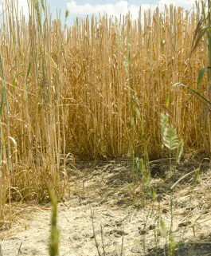

Cornfed: Creating a More Sustainable World
Liz Hinkle – whose family has run Hinkle Farms in Pennsylvania for generations – is continuously improving how resources are managed and how corn production impacts the land, water and air.
Learn more about Liz’ commitment to cornfed sustainability:
Q: Can you expand on sustainability practices that you’re using on your farm?
A: Practices that we’re doing constantly are no-till, cover cropping, crop rotations, soil testing and nutrient management. With the no-till, we’re 100% no-till – we have been probably for the last 15-20 years. Cover cropping – that we’ve been doing constantly as well for the last few years. The cover cropping and the no-till really helps to hold the soil in place. We spread manure from our hog facility on our fields, which reduces our reliance on synthetic fertilizers, and then we use additional fertilizer as necessary to get the nutrients needed for the crops. Those are the key things we’ve been doing here.
Q: Can you talk a little more on the importance of soil quality and water quality?
A: It’s a big focus for us. Our farm sits in the Chesapeake Bay, so we’re always kind of under the microscope here for the water quality aspect. Conservation has been drilled into us for years, especially how we use and manage the nutrients we need to raise a crop. We have conservation plans in place for all of our farms – those conservation plans let us know what management practices we need to implement to keep soil erosion to a minimum. That’s where the no-till comes into play – that’s been a huge help to us to reduce our soil erosion and not have to be so creative with other best management practices.
Q: Innovation goes hand-in-hand with sustainability. How do you plan ahead on your farm and what practices do you use to be more efficient?
A: We’re always looking to adapt. In the last five to ten years, the change in technology has been so drastic. There are constantly new things coming out. As farmers, we all need to be open-minded and keep looking at what’s out there and how we can improve and how we can utilize this new technology. We try to keep moving forward as much as we can. We’re utilizing GPS on our planters, on our combine, on our sprayers, plus better equipment to be able to do precision nutrient application and using new seed technology – all of these are new technologies we’re trying to use within our system to keep doing better. We’re always trying to do better.
Q: If you could go back and tell your younger self one thing, what would it be?
A: I don’t know if I know what to change because everything we go through is a learning experience and we need to value it. Good or bad – it helps us become more successful as long as we can use that knowledge to our advantage to do better the next time.
What is no-till farming?
No-till farming is a technique used by farmers to minimize or eliminate soil disturbance while growing crops. It's used to prevent soil erosion, improve soil quality, increase productivity and keep carbon in the soil, limiting the need for chemical fertilizers and lowering greenhouse gas emissions.
What are cover crops?
A cover crop is any crop grown used to cover the soil. The benefits of cover crops include soil erosion prevention, improved soil health, enhanced water availability, weed deterrence, pest and diseases control, improving crop yield potential, attracting pollinators and supplying a habitat for beneficial insects and food to animals.
Learn more

For crops like wheat, like this winter wheat, last year's crop residue and litter remain on the soil surface, offering protection from wind and water erosion. Credit: USDA